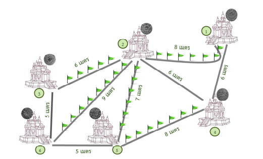

คำอธิบายวิธีทำพร้อม code สำหรับข้อ toi11_place
Author: Nagorn Phongphasura
Problem
สรุปโจทย์
พระราชาองค์หนึ่งต้องไปสักการะสถานที่ศักดิ์สิทธิ์ให้ครบทั้ง \(N\) แห่ง โดยทุกๆเมืองถูกเชื่อมกันด้วยถนน \(M\) เส้น แต่ละเส้นยาว \(l_i\) เมตร \(1 \leq i \leq M\) โดยมีเงื่อนไขว่า:
- เพื่อความสะดวก เส้นทางที่พระราชาเดินทางต้องมีจำนวนเส้นน้อยที่สุด แต่ต้องสามารถเดินทางได้ ครบทุกสถานที่
- ความยาวรวมของถนนทุกเส้นที่ถูกเลือก จะต้องมีค่า มากที่สุด
- เพื่อการเฉลิมพระเกียรติ ทุกเส้นทางจะปักธง จำนวน \(l_i - 1\) ธง
ตัวอย่าง
พิจารณาภาพดังต่อไปนี้

จะได้ว่า จำนวนธงที่ต้องใช้ เท่ากับ \((6-1) + (8-1) + (9-1) + (7-1) + (8-1) = 33\) ธง
สิ่งที่ต้องทำ
หาจำนวนธงที่ต้องใช้ จากเงื่อนไขการเลือกเส้นทางดังกล่าว
Constraints
\(2 \leq N \leq 2 \times 10^5\) (จำนวนสถานที่ศักดิ์สิทธิ์)
\(1 \leq M \leq 10^6\) (จำนวนถนน)
\(1 \leq l_i \leq 10^5\) (ความยาวถนนแต่ละเส้น)
Prerequisites
Disjoint Set UnionMinimum Spanning Tree
Solution
สังเกตว่า สำหรับข้อนี้ สิ่งที่เราต้องทำคือ หาชุดของถนน ที่จะทำให้ทุกเมืองเชื่อมกัน และความยาวมากที่สุด ซึ่งสามารถทำได้โดยการใช้ MST (Minimum Spanning Tree) นั่นเอง
แต่ก่อนที่เราจะสามารถทำ MST ได้ เราจะต้องเรียนเกี่ยวกับ DSU (Disjoint Set Union) กันก่อน
DSU (Disjoint Set Union)
หน้าที่ของ DSU
ลองนึกภาพตามกันดูนะครับ หากเรามีปัญหาแบบนี้:
- สมมติมีเกาะ \(N\) เกาะ (ทุกเกาะแยกจากกันหมด)
- แล้วเราค่อยๆเชื่อมเกาะด้วยสะพาน
- แล้วเราอยากทราบในช่วงขณะหนึ่งว่า: "ถ้าหากว่าเราอยู่ที่เกาะ \(X\) เราสามารถเดินไปยังเกาะ \(Y\) ได้หรือไม่"
นี่คือปัญหาที่ DSU ถูกออกแบบมาให้แก้ไข โดย DSU จะมีหลักๆ อยู่ 2 ฟังก์ชั่น ได้แก่:
find(x)จะหาว่า เกาะแม่ของ \(X\) คือเกาะใดunite(x, y)จะทำหน้าที่เชื่อมเกาะ \(X\) และเกาะ \(Y\) เข้าด้วยกัน แล้วคืนค่า \(true\) (สื่อว่า เชื่อมสำเร็จ) แต่หากเชื่อมกันอยู่แล้ว จะคืนค่าเป็น \(false\) (สื่อว่า เชื่อมไม่สำเร็จ)
ดังนั้น เมื่อเราอยากจะรู้ว่า สองเกาะใดๆสามารถเดินทางไปมาหากันได้หรือไม่ ก็แค่เช็กว่า find(x) == find(y) เป็นจริงหรือไม่
- \(true\): แสดงว่า เกาะแม่ของ \(X\) และ \(Y\) คือเกาะเดียวกัน นั่นคือ เราสามารถเดินทางจาก \(X\) ไปยัง \(Y\) ได้
- \(false\): แสดงว่า เกาะแม่ของ \(X\) และ \(Y\) เป็นคนละเกาะกัน นั่นคือ เราไม่สามารถเดินทางจาก \(X\) ไปยัง \(Y\) ได้
ซึ่ง DSU จะทำหน้าที่ในการ ตั้งให้เกาะแม่ เป็นเกาะเดียวกัน เมื่อ 2 เกาะใดๆ ถูก unite เข้าด้วยกัน
วิธีการทำงานของ DSU
ก่อนอื่น เราจะมีอาเรย์ parent เพื่อเก็บว่า parent[x] = เกาะแม่ของ X โดยตอนต้น parent[x] = x สำหรับทุกๆ \(X\)
-
\(find()\):
การเขียนฟังก์ชั่น \(find()\) คือการ ไต่ไปหาเกาะแม่ ดังนั้น ในการเขียนฟังก์ชั่นนี้ เราก็แค่ต้องเขียนดังนี้:
find()แต่จากโค้ดนี้ หากลองสังเกตดู จะเห็นได้ว่า การไต่เนี่ย เนื่องจากเวลาเราเชื่อมเกาะ \(X\) และ \(Y\) เราก็แค่ตั้งให้int find(int x){ if (x == parent[x]) return x; // หากเราไต่มาถึงเกาะแม่แล้ว ก็ตอบไปเลย else return find(parent[x]); // แต่ถ้าเกาะนี้ยังไม่ใช่เกาะแม่ ก็ให้ไต่ต่อไป (ซึ่งก็คือการ find ขึ้นไปต่อ) }parent[find(x)] = find(y)นั่นคือ:- ตั้งให้ เกาะแม่ ของ เกาะแม่ ของ \(X\) เป็นเกาะแม่ของ \(Y\)
- เมื่อไต่จาก \(X\) จะไปพบเกาะแม่ของ \(Y\) และเมื่อไต่จาก \(Y\) ก็จะพบเกาะแม่ของ \(Y\) เช่นกัน
- ทำให้พบเกาะแม่เดียวกัน นั่นคือ เชื่อมกันเรียบร้อยแล้ว
ซึ่งการทำแบบนี้ อาจจะทำให้การไต่ขึ้นไปนั้น ต้องไต่เรื่อยๆถึง \(N\) ครั้ง ซึ่งอาจทำให้ช้าได้ ดังนั้น เราจึงมีวิธีทำให้ \(find()\) เร็วขึ้น โดยการเขียนดังนี้:
find()int find(int x){ if (x == parent[x]) return x; // ทำเหมือนเดิม else { parent[x] = find(parent[x]); // แทนที่จะแค่ไต่ขึ้นไป ให้ตั้งให้ parent[x] = เกาะแม่ ก่อน ซึ่งจะทำให้การ find(x) ครั้งต่อไป สามารถหยุดได้เลย (เนื่องจาก เราได้ตั้งเกาะแม่ไว้ที่ X แล้ว) return parent[x]; } }สามารถอ่าน \(Proof\) ของ Time Complexity ของ DSU ได้ ที่นี่ หรือ ที่นี่
-
\(unite()\)
ฟังก์ชั่น \(unite()\) คือการ เชื่อมเกาะ 2 เกาะ เข้าด้วยกัน ซึ่งง่ายมากๆ ก็คือแค่ตั้งให้ เกาะแม่ของ \(X\) เป็น เกาะแม่ของ \(Y\) สามารถเขียนได้ดังนี้:
unite()สามารถดูวิดีโอเพื่อให้เข้าใจ DSU มากขึ้นได้ที่นี่bool unite(int x, int y){ int px = find(x); // หาเกาะแม่ของ X int py = find(y); // หาเกาะแม่ของ Y if (px != py) { parent[px] = py; // ตั้งให้เกาะแม่ของ X เป็นเกาะแม่ของ Y return true; } else return false; }
MST (Minimum/Maximum Spanning Tree)
หน้าที่ของ MST
MST มีไว้สำหรับหา "การเลือก Edge จำนวนน้อยที่สุด ที่ทำให้ทุกๆ Node สามารถเชื่อมกันไปมาได้ และผลรวมความยาวมีค่า มาก หรือ น้อย ที่สุด"
เมื่อทำ MST เสร็จ เมืองจะถูก \(unite\) จำนวน \(N - 1\) ครั้ง (เนื่องจาก การเชื่อมให้ครบ \(N\) สถานที่ จะต้องใช้ \(N - 1\) เส้นทางพอดี ซึ่งจะทำให้เป็น Tree ที่ถูก Span อยู่ในกราฟโดยผลรวมระยะทางมีค่า Minimum ที่สุด) จึงเป็นเหตุผลที่ว่า Algorithm ทีนี้มีชื่อว่า Minimum Spanning Tree นั่นเอง
วิธีการทำงานของ MST
- \(sort\) ถนนทุกๆเส้นจากระยะทางมากไปน้อย
- \(loop\) ถนนทุกๆเส้น โดยในแต่ละรอบ เราจะมี \([l_i, x, y]\) แทน [ความยาวถนน, ปลายถนนที่ 1, ปลายถนนที่ 2] โดยให้ทำตามนี้:
- ให้ทำการ \(unite(x, y)\)
- ทำซ้ำให้ครบ
จบเลย ขั้นตอนการทำงานของ MST มีเพียงแค่นั้นแหละ
สามารถดูวิดีโอที่อยู่ในใน เว็บนี้ เพื่อให้เข้าใจการทำงานของ MST ได้มากขึ้น (ในเว็บนี้ จะใช้ Minimum Spanning Tree แต่สำหรับข้อนี้ เราจะใช้ Maximum Spanning Tree)
วิธีทำ
หา Maximum Spanning Tree จากกราฟที่ได้มากจากโจทย์ได้เลย
Code
#include <bits/stdc++.h>
using namespace std;
int parent[200005];
int find(int x){
if (x == parent[x]) return x; // ทำเหมือนเดิม
else {
parent[x] = find(parent[x]); // แทนที่จะแค่ไต่ขึ้นไป ให้ตั้งให้ parent[x] = เกาะแม่ ก่อน ซึ่งจะทำให้การ find(x) ครั้งต่อไป สามารถหยุดได้เลย (เนื่องจาก เราได้ตั้งเกาะแม่ไว้ที่ X แล้ว)
return parent[x];
}
}
bool unite(int x, int y){
int px = find(x); // หาเกาะแม่ของ X
int py = find(y); // หาเกาะแม่ของ Y
if (px != py) {
parent[px] = py; // ตั้งให้เกาะแม่ของ X เป็นเกาะแม่ของ Y
return true;
}
else return false;
}
int main(){
cin.tie(NULL)->sync_with_stdio(false);
int n, m;
cin >> n >> m;
vector <tuple <int, int, int>> edge(m); // เก็บถนนเป็น tuple: [l, x, y]
for(auto &[l, x, y] : edge) {
cin >> x >> y >> l; // รับค่า x, y, l
}
sort(edge.begin(), edge.end(), greater<tuple <int, int, int>>()); // เรียงจากมากไปน้อย โดยการใช้ greater<>
for (int i = 1; i <= n; i++) parent[i] = i; // ตั้ง parent[i] = i สำหรับทุกๆ i
long long ans = 0;
for (auto [l, x, y] : edge) {
int px = find(x), py = find(y); // หาเกาะแม่
if (unite(x, y)) { // หาก x และ y ยังไม่เชื่อม (คืนค่า true)
ans += l - 1; // ให้เพิ่มคำตอบไปด้วย l - 1 (จากโจทย์ ถนนที่ยาว l จะใช้ธง l - 1)
}
}
cout << ans;
}
Total Time Complexity
\(O(M\) \(log\) \(M)\)